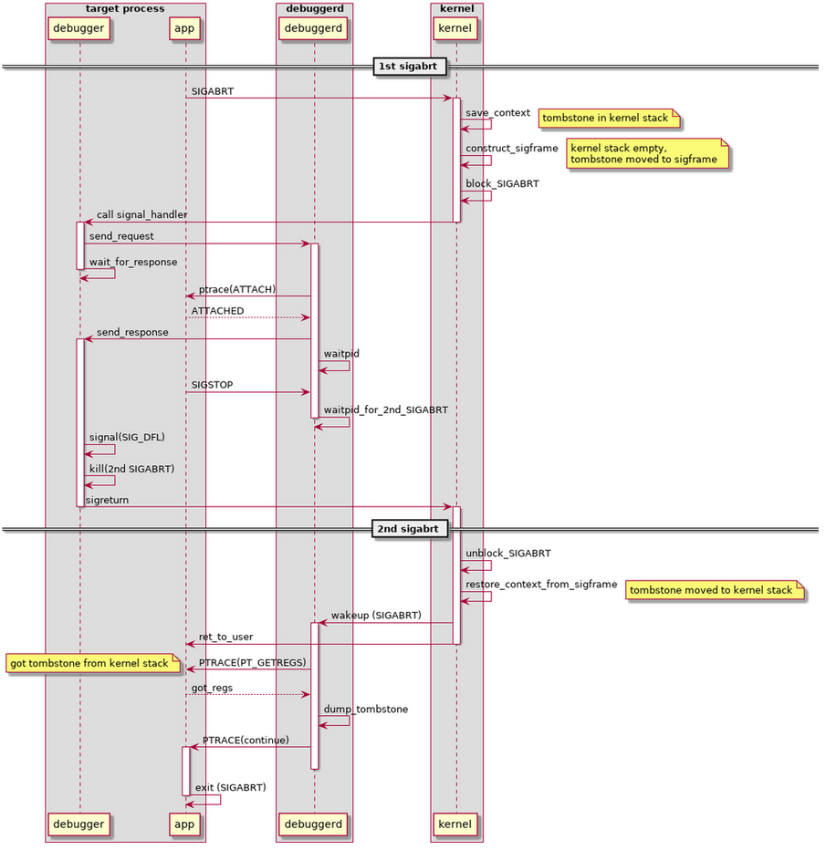

Android Tombstone Handling
Table of Contents
1. Android Tombstone Handling
以 SIGABORT 为例, 说明如何生成 tombstone
1.1. 进程主动调用 abort()
abort() 最终会调用 tgkill(SIGABORT)
1.2. tgkill 进入 kernel
- 当前 user space 的上下文被保存到 kernel stack
- SIGABORT 保存在 pending_signals 中
1.3. 调用 signal handler
tgkill syscall 通过 ret_from_intr 返回到 userspace 前, handle_signal 会负责保证 signal handler 被调用
- 在 userspace stack 上保存 kernel stack 的 sigframe
- 当前 SIGABORT 信号被 block, 保证 signal handler 执行过程中不会再次 handle SIGABORT 信号
- branch 到 userspace 的 debugger signal handler
1.4. debugger
- 通过 socket 通知 debuggerd
- 将 SIGABORT 的 action 修改为 default
- 通过 kill(SIGABORT) 向自己再次发送 SIGABORT 信号, 但由于 handle_signal 已经将这个信号 block, 所以并不会在这里马上触发. 后面 debuggerd 部分会看到 debuggerd 会等待这个信号
- 调用 sigreturn
1.5. debuggerd
debuggerd 收到来自 debugger 的请求后, 会:
- 通过 ptrace attach 到目标进程 (attach 会隐含着发送一个 SIGSTOP)
- 通知目标进程继续执行
- 通过 waitpid 等待之前发给目标进程的 SIGSTOP
- 再次通过 waitpid 等待目标进程第二次收到 SIGABORT
- 收到第二个 SIGABORT 后会通过 ptrace 的 PT_GETREGS 等方法获得 tombstone 相关信息
- 将 SIGABORT 通过 ptrace 的 CONTINUE 转给目标进程, 后者会最终异常退出
1.6. sigreturn
debugger 的 sigreturn 系统调用会:
- 进入到 kernel
- 通过 sigframe 恢复 kernel stack 为最初 abort 时的 kernel stack, 最终 tombstone 打印的值均来自这个 sigframe
- 将 SIGABORT unblock
- 返回到 userspace, 由于此时有一个 pending 的 SIGABORT, 所以会先唤醒 debugger 后再返回到 userspace
1.7. 唤醒 debuggerd
debuggerd 因为第二次 SIGABORT 被唤醒, 这时目标进程的 kernel stack 中保存的是第一次 SIGABORT 的 context, 所以 debuggerd 可以用 ptrace 拿到正确的数据
1.8. 总结
box "target process" participant debugger as db participant app end box box "debuggerd" participant debuggerd as dd end box box "kernel" participant kernel end box == 1st sigabrt == app -> kernel: SIGABRT activate kernel kernel -> kernel: save_context note right: tombstone in kernel stack kernel -> kernel: construct_sigframe note right kernel stack empty, tombstone moved to sigframe end note kernel -> kernel: block_SIGABRT kernel -> db: call signal_handler deactivate kernel activate db db -> dd: send_request activate dd db -> db: wait_for_response deactivate db dd -> app: ptrace(ATTACH) app --> dd: ATTACHED dd -> db: send_response activate db dd -> dd: waitpid app -> dd: SIGSTOP dd -> dd: waitpid_for_2nd_SIGABRT deactivate dd db -> db: signal(SIG_DFL) db -> db: kill(2nd SIGABRT) db -> kernel: sigreturn deactivate db == 2nd sigabrt == activate kernel kernel -> kernel: unblock_SIGABRT kernel -> kernel: restore_context_from_sigframe note right: tombstone moved to kernel stack kernel -> dd: wakeup (SIGABRT) activate dd kernel -> app: ret_to_user deactivate kernel dd -> app: PTRACE(PT_GETREGS) note left: got tombstone from kernel stack app --> dd: got_regs dd -> dd: dump_tombstone dd -> app: PTRACE(continue) activate app deactivate dd app -> app: exit (SIGABRT) deactivate app
